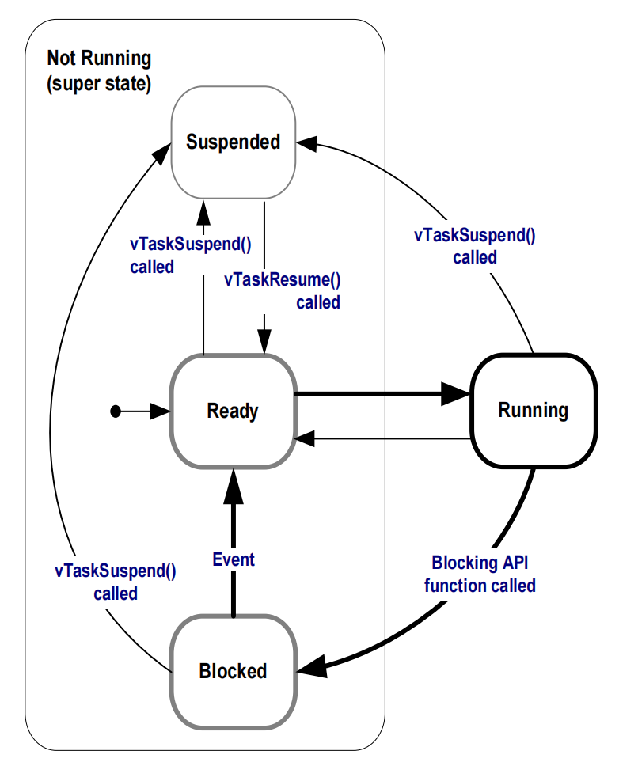
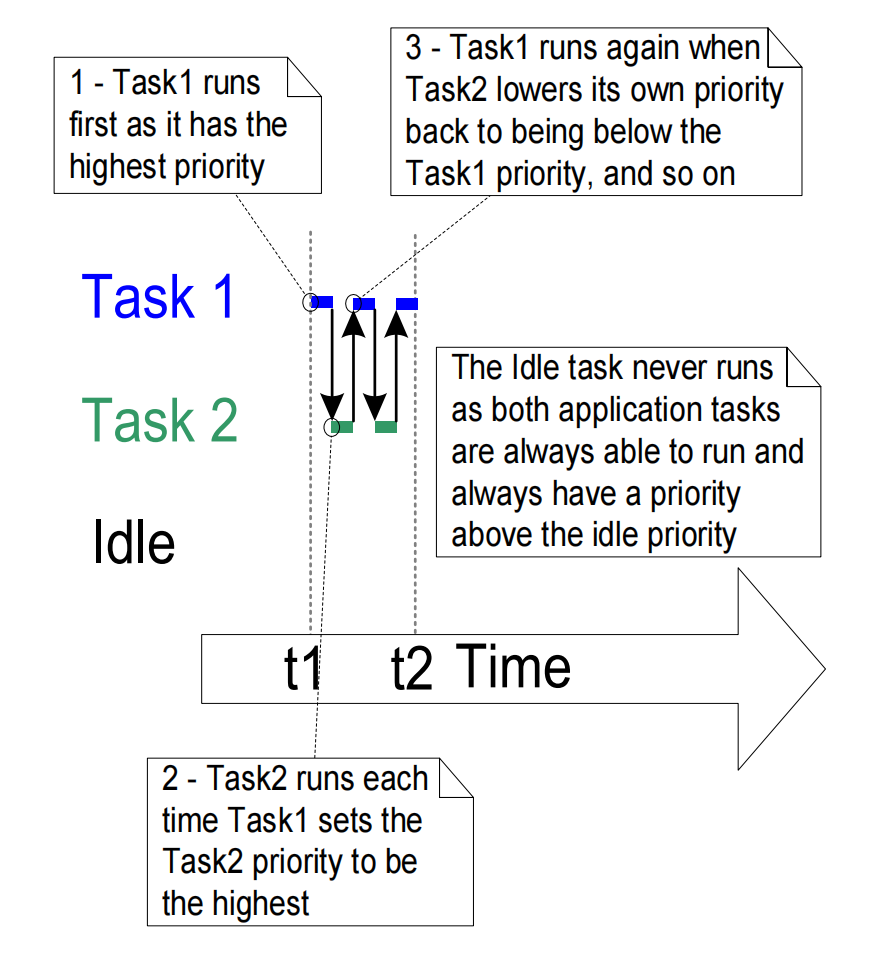

Chapter 3 任务管理
3.1 章节介绍和范围
范围
本章旨在让读者更好地理解 :
- FreeRTOS 如何为应用程序中的每个任务分配处理时间。
- FreeRTOS 如何选择在任何给定时间应该执行哪个任务。
- 每个任务的相对优先级如何影响系统行为。
- 任务可以存在的状态。
读者还应该充分了解 :
- 如何实现任务。
- 如何创建任务的一个或多个实例 ( instance ) 。
- 如何使用任务参数。
- 如何更改已创建任务的优先级。
- 如何删除任务。
- 如何使用任务实现周期性处理 ( 软件定时器将在后面的章节中讨论 ) 。
- 空闲任务何时执行以及如何使用。
本章介绍的概念对于理解如何使用 FreeRTOS 以及 FreeRTOS 应用程序的行为至关重要。因此，这是书中最详细的一章。
3.2 任务函数
任务被实现为 C 函数。 它们唯一的特殊之处是它们的原型，它必须返回 void 并接受一个 void 指针参数。 清单 11 展示了原型。
1 | void ATaskFunction( void *pvParameters ); |
清单 11. 任务函数原型
每个任务本身都是一个小程序。 它有一个入口点，通常会在无限循环内永远运行，并且不会退出。典型任务的结构如清单 12 所示。
不得允许 FreeRTOS 任务以任何方式从其实现函数返回 —— 它们不得包含 return 语句，并且不得允许执行到函数末尾之后。如果不再需要某个任务，则应将其显式删除。清单 12 也演示了这一点。
单个任务函数定义可用于创建任意数量的任务 —— 每个创建的任务都是一个单独的执行实例 ( instance )，具有自己的堆栈和在任务本身内定义的任何自动 ( 堆栈 ) 变量的副本。
1 | void ATaskFunction( void *pvParameters ) |
清单 12. 一个典型的任务函数的结构
3.3 顶层任务状态
应用程序可以包含许多任务。 如果运行应用程序的处理器是单核的，那么在任何给定时间只能执行一个任务。 这意味着任务可以存在两种状态：运行和未运行。 首先考虑这种简单化的模型，但请记住，这是一种过度简化。 在本章的后面，显示 “未运行” 状态实际上包含许多子状态。
一个应用程序可以包含许多任务。如果运行应用程序的处理器是单核的，则在任何给定时间只能执行一个任务。这意味着任务可以存在于两种状态之一：运行 ( Running ) 和 非运行 ( No Running ) 。首先考虑这种简单化的模型，但请记住，它过于简单化了。本章后面显示 "非运行 ( No Running )" 状态实际上包含许多子状态。
当任务处于运行状态时，处理器正在执行任务的代码。当任务处于 "非运行 ( No Running )" 状态时，该任务处于休眠状态，其状态已被保存，以便下次调度程序决定它应该进入 "运行 ( Running ) " 状态时恢复执行。 当任务恢复执行时，它会从上次离开 "运行 ( Running )" 状态之前即将执行的指令开始执行。

从 “未运行” 状态转换为 “运行” 状态的任务被称为 “切入” 或 “换入”。 相反，从 “运行” 状态转换到 “未运行” 状态的任务据说已被 “切出” 或 “换出”。 FreeRTOS 的调度程序是唯一可以切换任务的实体。
从非运行状态转换到运行状态的任务被称为 "切换入 ( switched in ) " 或 "交换入 ( swapped in )"。相反，从运行状态转换到非运行状态的任务被称为 "切换出 ( switched out )" 或 "交换出 ( swapped out )"。FreeRTOS 调度程序是唯一可以切换入和切换出任务的实体。
3.4 创建任务
xTaskCreate() API 函数
FreeRTOS V9.0.0 还包括 xTaskCreateStatic() 函数，该函数在编译时静态地分配创建任务所需的内存: 使用 FreeRTOS xTaskCreate() API 函数创建任务。这可能是所有 API 函数中最复杂的，因此很不幸，它是第一个遇到的函数，但是必须首先掌握任务，因为它们是多任务系统中最基本的组件。本书附带的所有示例都使用了 xTaskCreate() 函数，因此有大量示例可供参考。
第 1.5 节 “数据类型和编程样式指南” 描述了所使用的数据类型和命名约定。
1 | BaseType_t xTaskCreate( TaskFunction_t pvTaskCode, |
清单 13. xTaskCreate() API 函数原型
表 8. xTaskCreate() 参数和返回值
| 参数名称/返回值 | 描述 |
|---|---|
pvTaskCode |
任务只是永不退出的 C 函数，因此通常作为无限循环实现。 pvTaskCode 参数只是一个指向实现任务的函数的指针（实际上，只是函数的名称）。 |
pcName |
任务的描述性名称。FreeRTOS 不会以任何方式使用它。它纯粹是作为调试辅助工具而包含的。通过人类可读的名称来识别任务要比尝试通过其句柄来识别任务简单得多。 应用程序定义的常量 configMAX_TASK_NAME_LEN 定义了任务名称可以采用的最大长度 — 包括空终止符。提供长度超过此最大值的字符串将导致字符串被自动截断。 |
usStackDepth |
每个任务都有自己的唯一堆栈，该堆栈在任务创建时由内核分配给任务。 usStackDepth 值告诉内核堆栈的大小。该值指定堆栈可以容纳的字数，而不是字节数。 例如，如果堆栈是 32 位宽并且 usStackDepth 作为 100 传入，则将分配 400 字节的堆栈空间（100 * 4 字节）。 堆栈深度乘以堆栈宽度不得超过 uint16_t 类型的变量中可包含的最大值。空闲任务使用的堆栈大小由应用程序定义的常量 configMINIMAL_STACK_SIZE [1] 定义。在 FreeRTOS 演示应用程序中为所使用的处理器架构分配给该常量的值是建议用于任何任务的最小值。如果您的任务使用了大量堆栈的空间，则必须分配一个更大的值。没有简单的方法可以确定任务所需的堆栈空间。 可以计算，但大多数用户会简单地分配一个他们认为合理的值，然后使用FreeRTOS提供的功能来确保分配的空间确实足够，并且RAM不会被不必要地浪费。第 12.3 节 “堆栈溢出” 包含有关如何查询任务实际已使用的最大堆栈空间的信息。 |
pvParameters |
任务函数接受指向 void ( void* ) 的指针类型的参数。分配给 pvParameters 的值是传递到任务中的值。 本书中的一些示例演示了如何使用该参数。 |
uxPriority |
定义任务执行的优先级。优先级可以从 0（最低优先级）到 ( configMAX_PRIORITIES – 1)（最高优先级）进行分配。 configMAX_PRIORITIES 是一个用户定义的常量，在 3.5 节中描述。传递高于 ( configMAX_PRIORITIES - 1 ) 的 uxPriority 值将导致分配给任务的优先级被静默地限制为最大合法值。 |
pxCreatedTask |
pxCreatedTask 可用于传递正在创建的任务的句柄。然后，该句柄可用于在 API 调用中引用任务，例如更改任务优先级或删除任务如果您的应用程序不需要任务句柄，则可以将 pxCreatedTask 设置为 NULL。 |
| 返回值 | 有两种可能的返回值：pdPASS：这表明任务已成功创建。 pdFAIL：这表明任务尚未创建，因为没有足够的堆内存可供FreeRTOS分配足够的RAM来容纳任务数据结构和堆栈。 第 2 章提供了有关堆内存管理的更多信息。 |
[1] : 这是 FreeRTOS 源代码使用
configMINIMAL_STACK_SIZE设置的唯一方式，尽管该常量也在演示应用程序内部使用，以帮助演示在多个处理器架构之间移植。
示例 1. 创建任务
此示例演示了创建两个简单任务，然后启动任务执行所需的步骤。这些任务只是周期性地打印出一个字符串，使用一个粗略的空循环来创建周期延迟。这两个任务都是以相同的优先级创建的，除了它们打印出来的字符串之外，它们都是相同的 —— 它们各自的实现见清单14和清单15。
1 | void vTask1( void *pvParameters ) |
清单 14. 示例 1 中使用的第一个任务的实现
1 | void vTask2( void *pvParameters ) |
清单 15. 示例 1 中使用的第二个任务的实现
main() 函数在启动调度程序之前创建任务，有关其实现请参见清单 16。
1 | int main( void ) |
清单 16. 启动示例 1 任务
执行该示例将产生图 10 中所示的输出。

屏幕截图显示每个任务在下一个任务执行之前打印一次其消息。 这是使用 FreeRTOS Windows 模拟器产生的人为场景。 Windows 模拟器并不是真正的实时。此外，写入 Windows 控制台需要相对较长的时间，并会导致一系列 Windows 系统调用。在具有快速且非阻塞打印功能的真正嵌入式目标上执行相同的代码可能会导致每个任务在切换出去以允许其他任务运行之前多次打印其字符串。
图 10 显示了两个任务似乎同时执行；然而，由于两个任务都在同一处理器核心上执行，因此情况并非如此。实际上，这两个任务都在快速进入和退出运行状态。两个任务都以相同的优先级运行，因此在同一处理器核心上共享时间。它们的实际执行模式如图 11 所示。
图11底部的箭头显示了从时间 t1 开始的时间流逝。彩色线显示每个时间点正在执行哪个任务 —— 例如，任务 1 在时间 t1 和时间 t2 之间执行。
任何时候只有一个任务可以处于运行状态。 因此，当一个任务进入 "运行 ( Running ) " 状态 ( 任务被切入 ) 时，另一个任务进入 "非运行 ( No Running ) " 状态（任务被切出）。
任一时刻只能有一个任务处于运行状态。因此，当一个任务进入“正在运行”状态（任务被切换入）时，另一个任务进入“未运行”状态（任务被切换出）。

示例 1 在启动调度程序之前从 main() 中创建了两个任务。也可以从另一个任务中创建一个任务。例如，可以从任务 1 中创建任务 2，如清单 17 所示。
1 | void vTask1( void *pvParameters ) |
清单 17. 调度程序启动后从另一个任务中创建一个任务
示例 2. 使用任务参数
在示例 1 中创建的两个任务是字面上的，它们之间的唯一区别是它们打印出来的文本字符串。 相反，可以通过创建单个任务实现的两个实例来消除这种重复。 然后可以使用任务参数将其应打印的字符串传递给每个任务。
清单 18 包含示例 2 使用的单任务函数（ vTaskFunction ）的代码。此单个函数替换了示例 1 中使用的两个任务函数（ vTask1 和 vTask2 ）。请注意如何将任务参数转换为 char * 以获得任务应该打印出来的字符串。
1 | void vTaskFunction( void *pvParameters ) |
清单 18. 用于在示例 2 中创建两个任务的单个任务函数
即使现在只有一个任务实现（vTaskFunction），也可以创建多个已定义任务的实例。每个创建的实例将在 FreeRTOS 调度程序的控制下独立执行。
清单 19 演示了如何使用 xTaskCreate() 函数的 pvParameters 参数将文本字符串传递给任务。
1 | /* 定义将作为任务参数传入的字符串。它们被定义为 const 并且不在堆栈上， |
清单 19. 示例 2 所使用的 main() 函数
示例 2 的输出与图 10 中示例 1 所示的输出完全相同。
3.5 任务优先级
xTaskCreate() API 函数的 uxPriority 参数为正在创建的任务分配初始优先级。调度程序启动后，可以使用 vTaskPrioritySet() API 函数更改优先级。
可用优先级的最大数量由 FreeRTOSConfig.h 中应用程序定义的 configMAX_PRIORITIES 编译时配置常量设置。低数字优先级值表示低优先级任务，优先级 0 是可能的最低优先级。因此，可用优先级的范围是 0 到 ( configMAX_PRIORITIES – 1)。 任意数量的任务可以共享相同的优先级 —— 确保最大的设计灵活性。
FreeRTOS 调度程序可以使用两种方法之一来决定哪个任务将处于运行状态。 configMAX_PRIORITIES 可以设置的最大值取决于所使用的方法：
通用方法：通用方法在 C 中实现，可以与所有 FreeRTOS 架构移植一起使用。
使用通用方法时，FreeRTOS 不会限制
configMAX_PRIORITIES可以设置的最大值。 但是，始终建议将configMAX_PRIORITIES值保持在必要的最小值，因为该值越高，消耗的 RAM 就越多，并且最坏情况下的执行时间也就越长。如果在
FreeRTOSConfig.h中将configUSE_PORT_OPTIMISED_TASK_SELECTION设置为 0，或者如果configUSE_PORT_OPTIMISED_TASK_SELECTION未定义，或者通用方法是为正在使用的 FreeRTOS 移植提供的唯一方法，则将使用通用方法。架构优化方法：
体系结构优化方法使用少量汇编代码，并且比通用方法更快。
configMAX_PRIORITIES置不会影响最坏情况下的执行时间。如果使用架构优化方法，则
configMAX_PRIORITIES不能大于 32。与通用方法一样，建议将configMAX_PRIORITIES保持在必要的最小值，因为其值越高，消耗的 RAM 就越多。如果在
FreeRTOSConfig.h中将configUSE_PORT_OPTIMISED_TASK_SELECTION设置为 1，则将使用架构优化方法。并非所有 FreeRTOS 移植都提供架构优化方法。
FreeRTOS 调度程序将始终确保能够运行的最高优先级任务是选择进入运行状态的任务。 当多个具有相同优先级的任务能够运行时，调度程序将依次将每个任务转入和转出运行状态。
3.6 时间测量和嘀嗒中断
第 3.12 节 “调度算法” 描述了一个名为 “时间切片 ( time slicing )” 的可选功能。 到目前为止所提供的示例中使用了时间切片，并且是在它们生成的输出中观察到的行为。在示例中，两个任务都是以相同的优先级创建的，并且两个任务始终能够运行。 因此，每个任务执行一个 "时间片 ( time slice )"，在时间片开始时进入运行状态，在时间片结束时退出运行状态。在图 11 中，t1 和 t2 之间的时间等于单个时间片。
为了能够选择下一个要运行的任务，调度程序本身必须在每个时间片 [1] 的末尾执行。称为 "嘀嗒中断 ( tick interrupt )" 的周期性中断用于此目的。时间片的长度由嘀嗒中断频率有效地设置，该频率由 FreeRTOSConfig.h 中应用程序定义的 configTICK_RATE_HZ 编译时配置常量配置。例如，如果 configTICK_RATE_HZ 设置为 100 (Hz)，则时间片将为 10 毫秒。两次嘀嗒中断之间的时间称为 "嘀嗒周期 (tick period)"。 一个时间片等于一个嘀嗒周期。
[1] : 需要注意的是，时间片的末尾并不是调度程序可以选择运行新任务的唯一位置；正如本书将演示的那样，在当前正在执行的任务进入阻塞状态后，或者当中断将更高优先级的任务移至就绪状态时，调度程序还将选择一个新任务立即运行。
为了能够选择要运行的下一个任务，调度程序本身必须在每个时间片的末尾执行。 称为 “嘀嗒中断” 的周期性中断用于此目的。 时间片的长度由嘀嗒中断频率有效设置，嘀嗒中断频率由应用程序在 FreeRTOSConfig.h 中定义的 configTICK_RATE_HZ 编译时配置常量配置。 例如，如果 configTICK_RATE_HZ 设置为 100（Hz），则时间片将为 10 毫秒。 两次嘀嗒中断之间的时间称为 “嘀嗒期”。 一个时间片等于一个嘀嗒时间段。
图 11 可以展开来显示调度程序本身在执行序列中的执行情况。如图 12 所示，其中顶部行显示调度程序何时执行，细箭头显示从任务到嘀嗒中断，然后从嘀嗒中断返回到不同任务的执行顺序。
configTICK_RATE_HZ 的最佳值取决于正在开发的应用程序，但其值通常为 100。

FreeRTOS API 调用始终以嘀嗒周期的倍数指定时间，这通常被简单地称为嘀嗒。pdMS_TO_TICKS() 宏将以毫秒为单位的时间转换为以嘀嗒为单位的时间。可用的分辨率取决于定义的嘀嗒频率，如果嘀嗒频率高于 1 KHz (configTICK RATE HZ 大于 1000)，则不能使用 pdMS_TO_TICKS()。则无法使用 pdMS_TO_TICKS()。清单 20 显示了如何使用 pdMS_TO_TICKS() 将指定为 200 毫秒的时间转换为以嘀嗒为单位指定的等效时间。
1 | /* pdMS_TO_TICKS() 将以毫秒为单位的时间作为其唯一参数，并计算为以嘀嗒周期为单位的等效时间。 |
清单 20. 使用 pdMS_TO_TICKS() 宏将 200 毫秒转换为嘀嗒周期中的等效时间
注意 : 不建议在应用程序中直接以嘀嗒为单位指定时间，而是使用
pdMS_TO_TICKS()宏来指定以毫秒为单位的时间，这样做可以确保如果嘀嗒频率发生变化，应用程序中指定的时间不会发生变化。
"嘀嗒计数 ( tick count )" 值是自调度器启动以来发生的嘀嗒中断的总数，假设嘀嗒计数没有溢出。用户应用程序在指定延迟周期时不必考虑溢出，因为时间一致性由 FreeRTOS 内部管理。
第 3.12 节 “调度算法” 描述了影响调度程序何时选择要运行的新任务以及何时执行嘀嗒中断的配置常量。
示例 3. 使用优先级进行实验
调度程序将始终确保能够运行的最高优先级任务是被选择进入运行状态的任务。 到目前为止，在我们的示例中，已经以相同的优先级创建了两个任务，因此它们是依次进入和退出运行状态的。 此示例研究当示例 2 中创建的两个任务之一的优先级发生更改时会发生什么情况。 这次，第一个任务将以优先级 1 创建，第二个任务将以优先级 2 创建。创建任务的代码如清单 21 所示。实现这两个任务的单个函数没有改变；它仍然只是定期打印出一个字符串，使用空循环来创建延迟。
1 | /* 定义将作为任务参数传入的字符串。 |
清单 21. 创建两个不同优先级的任务
示例 3 生成的输出如图 13 所示。
调度程序将始终选择能够运行的最高优先级任务。 任务 2 的优先级高于任务 1，并且始终能够运行；因此，任务 2 是唯一进入运行状态的任务。 由于任务 1 永远不会进入运行状态，因此它永远不会打印出其字符串。则称任务1被任务2 “ 剥夺 “ 了处理时间。( Task 1 is said to be ‘starved’ of processing time by Task 2. )

任务2总是能够运行，因为它永远不需要等待任何东西 —— 它要么是在一个空循环中循环，要么打印到终端。
图 14 显示了示例 3 的执行顺序。

3.7 展开说明 “ 非运行 “ 状态
到目前为止，创建的任务总是有处理要执行，并且不需要等待任何事情 —— 因为它们不需要等待任何事情，所以它们总是能够进入运行状态。这种类型的 “ 连续处理 ( continuous processing ) “ 任务的用途有限，因为它们只能以最低优先级创建。如果它们以任何其他优先级运行，它们将完全阻止优先级较低的任务运行。
为了使任务有用，必须重写它们以使其成为事件驱动的。 事件驱动的任务只有在触发它的事件发生后才能执行工作 ( 处理 )，并且在该事件发生之前无法进入运行状态。 调度程序始终选择能够运行的最高优先级任务。高优先级任务无法运行意味着调度程序无法选择它们，而必须选择能够运行的较低优先级任务。 因此，使用事件驱动的任务意味着可以以不同的优先级创建任务，而最高优先级的任务不会耗尽所有较低优先级的任务的处理时间。
阻塞状态
正在等待事件的任务被认为处于 "阻塞 ( Blocked ) " 状态，这是 "非运行 ( No Running ) " 状态的子状态。
任务可以进入阻止状态以等待两种不同类型的事件:
- 时间 ( 与时间相关 time-related ) 事件 Temporal events —— 该事件要么是延迟期到期，要么是达到绝对时间。例如，任务可能会进入阻塞状态，等待 10 毫秒过去。
- 同步事件 Synchronization events —— 事件源自另一个任务或中断。例如，任务可能会进入阻塞状态以等待数据到达队列。 同步事件涵盖了广泛的事件类型。
FreeRTOS 的队列，二进制信号量，计数信号量，互斥量，递归互斥量，事件组和直接到任务通知都可用于创建同步事件。 所有这些功能都将在本书的后续章节中介绍。
任务可以在具有超时的同步事件上阻塞，从而有效地同时阻塞两种类型的事件。例如，任务可以选择等待最多 10 毫秒以便数据到达队列。如果 10 毫秒内有数据到达，或者 10 毫秒后没有数据到达，任务将离开阻塞状态。
暂停状态
" 暂停 ( Suspended ) " 也是 "非运行 ( No Running ) " 状态的子状态。 处于暂停状态的任务对调度程序是不可用的。 进入暂停状态的唯一方法是通过调用 vTaskSuspend() API 函数，退出暂停状态的唯一方法是通过调用 vTaskResume() 或 xTaskResumeFromISR() API 函数。大多数应用程序不使用暂停状态。
就绪状态
处于 “未运行” 状态但未被阻塞或挂起的任务被称为处于 “就绪” 状态。 它们能够运行，因此 “准备好” 运行，但当前不处于 “运行” 状态。
处于 "非运行 ( No Running )" 状态但未被 "阻塞 ( Blocked ) " 或 " 暂停 ( Suspended ) " 的任务被称为 "就绪 ( Ready ) " 状态。它们能够运行，因此 “准备 ( ready ) “ 运行，但目前不处于 "运行 ( Running ) " 状态。
完成状态转换图
图 15 扩展了之前过于简化的状态图，以包含本节中描述的所有"非运行 ( No Running )"子状态。到目前为止，示例中创建的任务尚未使用 "阻塞 ( Blocked ) " 或 " 暂停 ( Suspended ) " 状态；它们仅在 "就绪 ( Ready ) " 状态和 "运行 ( Running ) " 状态之间转换 —— 在图 15 中用粗线突出显示。
示例 4. 使用阻塞状态创建延迟
到目前为止，示例中创建的所有任务都是 “周期性的”——它们会延迟一段时间并打印出字符串，然后再延迟一次，依此类推。延迟是使用空循环非常粗略地生成的 —— 任务有效地轮询一个递增的循环计数器，直到它达到固定值。示例 3 清楚地展示了这种方法的缺点。优先级较高的任务在执行空循环时始终保持运行状态，” 剥夺 ( starving ) “ 了优先级较低的任务的任何处理时间。
任何形式的轮询都存在其他一些缺点，其中最主要的是效率低下。在轮询期间，任务实际上没有任何工作要做，但它仍然使用最长的处理时间，因此浪费了处理器周期。示例 4 通过将轮询空循环替换为对 vTaskDelay() API 函数的调用来纠正此行为，该函数的原型如清单 22 所示。新任务定义如清单 23 所示。请注意，仅当 FreeRTOSConfig.h 中的 INCLUDE_vTaskDelay 设置为 1 时，vTaskDelay() API 函数才可用。
vTaskDelay() 将调用任务置于阻塞状态，并持续固定数量的嘀嗒中断。任务处于阻塞状态时不使用任何处理时间，因此任务仅在实际有工作要做时才使用处理时间。
1 | void vTaskDelay( TickType_txTicksToDelay ); |
清单 22. vTaskDelay() 的函数原型
表 9. vTaskDelay() 参数
| 参数名称 | 描述 |
|---|---|
xTicksToDelay |
调用任务在转换回就绪状态之前将保持在阻塞状态的嘀嗒中断数。 例如，调用 vTaskDelay(pdMS_TO_TICKS(100)) 将导致调用任务保持阻塞状态 100 毫秒。例如，如果一个任务在嘀嗒 ( tick ) 计数为 10,000 时调用 vTaskDelay( 100 )，那么它将立即进入阻塞状态，并保持阻塞状态，直到嘀嗒 ( tick ) 计数达到 10,100。 |
1 | void vTaskFunction( void *pvParameters ) |
清单 23. 空循环延迟已被 vTaskDelay() 调用替换后的示例任务的源代码
尽管这两个任务仍以不同的优先级创建，但现在它们都将运行。示例 4 的输出（如图 16 所示）证实了预期的行为。

图 17 所示的执行序列解释了为什么两个任务都会运行，即使它们是以不同的优先级创建的。为简单起见，这里省略了调度程序本身的执行。
空闲任务在调度程序启动时自动创建，以确保始终至少有一个任务可以运行 ( 至少有一个任务处于就绪状态 ) 。第 3.8 节 空闲任务和空闲任务钩子 更详细地描述了空闲任务。

这两个任务只有实现方式发生了变化，功能没有变化。将图 17 与图 12 进行比较可以清楚地看出，此功能是以更高效的方式实现的。
图 12 显示了当任务使用空循环来创建延迟时的执行模式——始终运行，因此在任务之间使用百分之百的可用处理器时间。 图 17 显示了任务在整个延迟期间进入阻塞状态时的执行模式，因此只有当它们确实有需要执行的工作时 ( 在本例中只是一条要打印出来的消息 ) 才会使用处理器时间，因此仅使用可用处理时间的一小部分。
在图 17 的场景中，每次任务离开阻塞状态时，它们都会执行一小段时钟周期，然后重新进入阻塞状态。大多数时候，没有应用程序任务可以运行 ( 没有应用程序任务处于就绪状态 ) ，因此，没有应用程序任务可以选择进入运行状态。在这种情况下，空闲任务将运行。分配给空闲任务的处理时间量是系统中备用处理能力的衡量标准。使用 RTOS 可以显著增加备用处理能力，只需允许应用程序完全由事件驱动即可。
图 18 中的粗线显示了示例 4 中的任务执行的转换，每个任务现在都经过阻塞状态，然后返回到就绪状态。
vTaskDelayUntil() API 函数
vTaskDelayUntil() 与 vTaskDelay() 类似。正如刚才所演示的，vTaskDelay() 参数指定在调用 vTaskDelay() 的任务和同一任务再次退出阻塞状态之间应发生的嘀嗒 ( tick ) 中断数。任务保持阻塞状态的时间长度由 vTaskDelay() 参数指定，但任务离开阻塞状态的时间与调用 vTaskDelay() 的时间有关。
相反，vTaskDelayUntil() 的参数指定调用任务应从阻塞状态移至就绪状态的确切嘀嗒 ( tick ) 计数值。vTaskDelayUntil() 是当需要固定执行周期 ( 您希望任务以固定频率定期执行 ) 时应使用的 API 函数，因为调用任务被解除阻塞的时间是绝对的，而不是相对于调用函数的时间 ( 与 vTaskDelay() 的情况一样 ) 。
1 | void vTaskDelayUntil( TickType_t* pxPreviousWakeTime, TickType_t xTimeIncrement ); |
清单 24. vTaskDelayUntil() API 函数原型
表 10. vTaskDelayUntil() 的参数
| 参数名称 | 描述 |
|---|---|
pxPreviousWakeTime |
此参数的命名基于以下假设：vTaskDelayUntil() 用于实现定期且以固定频率执行的任务。在这种情况下，pxPreviousWakeTime 保存任务上次离开阻塞状态 ( 被 " 唤醒 ( woken ) " ) 的时间。此时间用作参考点，以计算任务下次离开阻塞状态的时间。pxPreviousWakeTime 指向的变量在 vTaskDelayUntil() 函数中自动更新；它通常不会被应用程序代码修改，但在第一次使用之前必须初始化为当前嘀嗒计数。清单 25 演示了如何执行初始化。 |
xTimeIncrement |
此参数的命名也是基于这样的假设：vTaskDelayUntil() 用于实现定期执行且具有固定频率 ( 由 xTimeIncrement 值设置的频率 ) 的任务。 |
示例 5. 将示例任务转换为使用 vTaskDelayUntil()
示例 4 中创建的两个任务是周期性任务，但是使用 vTaskDelay() 并不保证它们运行的频率是固定的，因为任务离开阻塞状态的时间与它们调用 vTaskDelay() 的时间相关。 将任务转换为使用vTaskDelayUntil() 而不是 vTaskDelay() 可以解决这个潜在的问题。
1 | void vTaskFunction( void *pvParameters ) |
清单 25. 使用 vTaskDelayUntil() 实现示例任务
示例 5 产生的输出与图 16 中的示例 4 所示的输出完全相同。
示例 6. 组合阻塞和非阻塞任务
前面的示例已经单独检查了轮询和阻塞任务的行为。该示例通过演示两个方案组合时的执行序列来重新实施所述的预期系统行为，如下所述。
创建两个优先级为 1 的任务。它们除了连续打印出一个字符串之外不执行任何操作。
这些任务从不进行任何可能导致它们进入阻塞状态的 API 函数调用，因此始终处于就绪状态或运行状态。这种性质的任务被称为
" 连续处理 ( continuous processing ) "任务，因为它们总是有工作要做（尽管在这种情况下是相当琐碎的工作）。清单 26 显示了连续处理任务的源代码。然后创建优先级为 2 的第三个任务，因此优先级高于其他两个任务。第三个任务也只是打印出一个字符串，但这次是定期打印的，所以使用
vTaskDelayUntil()API 函数在每次打印迭代之间将自己置于阻塞状态。
周期性任务的源代码如清单 27 所示。
1 | void vContinuousProcessingTask( void *pvParameters ) |
清单 26. 示例 6 中使用的连续处理任务
1 | void vPeriodicTask( void *pvParameters ) |
清单 27. 示例 6 中使用的周期性任务
图 19 显示了示例 6 产生的输出，并解释了图 20 中显示的执行序列所观察到的行为。


3.8 空闲任务和空闲任务钩子
示例 4 中创建的任务大部分时间处于阻塞状态。处于此状态时，它们无法运行，因此无法被调度程序选中。
必须始终至少有一个任务可以进入运行状态 [1] 。为确保这种情况，在调用 vTaskStartScheduler() 时，调度程序会自动创建一个空闲任务。空闲任务除了处于循环中之外几乎不执行其他操作 — 因此，与最初第一个示例中的任务一样，它始终能够运行。
[1] : 即使在使用 FreeRTOS 的特殊低功耗功能时也是如此，在这种情况下，如果应用程序创建的任务都无法执行，则执行 FreeRTOS 的微控制器将进入低功耗模式。
空闲任务具有可能的最低优先级 ( 优先级为零 ) ，以确保它永远不会阻止更高优先级的应用程序任务进入运行状态 —— 尽管没有什么可以阻止应用程序设计人员在空闲任务优先级上创建任务，从而共享空闲任务优先级 ( 如果需要 ) ，FreeRTOSConfig.h 中的 configIDLE_SHOULD_YIELD 编译时配置常量可用于防止空闲任务消耗处理时间，而这些时间可以更有效地分配给应用程序任务。configIDLE_SHOULD_YIELD 在第 3.12 节 “ 调度算法 “ 中进行了描述。
以最低优先级运行可确保只要优先级较高的任务进入就绪状态，空闲任务就会从运行状态转移出来。 这可以在图 17 中的时间点看到，其中空闲任务被立即换出以允许任务 2 在任务 2 离开被阻止状态的瞬间执行。 据说任务 2 已经抢占了空闲任务。 抢先自动发生，并且不知道任务被抢占。
以最低优先级运行可确保空闲任务在更高优先级任务进入就绪状态时立即退出运行状态。这可以在图 17 中的时间 tn 处看到，其中空闲任务立即被换出，以允许任务 2 在任务 2 离开阻塞状态的瞬间执行。则称任务 2 已抢占 ( pre-empted ) 空闲任务。抢占是自动发生的，被抢占的任务对此并不知情。Pre-emption occurs automatically, and without the knowledge of the task being pre-empted.
如果应用程序使用 vTaskDelete() API 函数，那么空闲任务就不会浪费处理时间。这是因为空闲任务负责在删除任务之后清理内核资源。
注意 : 注意：如果应用程序使用 vTaskDelete() API 函数，则空闲任务不能缺少处理时间，这一点至关重要。这是因为空闲任务负责在删除任务后清理内核资源。
空闲任务钩子函数
可以通过使用空闲钩子 idle hook ( 或空闲回调 idle callback ) 函数将特定于应用程序的功能直接添加到空闲任务中 —— 该函数在空闲任务循环的每次迭代中由空闲任务自动调用一次。
空闲任务钩子的常见用途包括：
执行低优先级、后台或连续处理功能。
测量备用处理能力的数量。（当所有优先级较高的应用程序任务无法执行时，空闲任务将会运行；因此，测量分配给空闲任务的处理时间量可清楚地指示多少处理时间。）
测量空闲处理能力的数量。( 只有当所有优先级较高的应用程序任务都没有工作要执行时，空闲任务才会运行；因此，测量分配给空闲任务的处理时间量可以清楚地表明有多少空闲处理时间。)
将处理器置于低功耗模式，提供一种在没有应用程序处理需要执行时节省电量的简单而自动的方法 ( 尽管使用此方法可以实现的电量节省效果不如使用第 10 章 “ 低功耗支持 “ 中描述的无滴答空闲模式 tick-less idle mode 可以实现的电量节省效果 ) 。
对空闲任务钩子函数实现的限制
空闲任务钩子函数必须遵守以下规则。
空闲任务钩子函数绝不能尝试阻塞或暂停。
注意 : 以任何方式阻塞空闲任务都可能导致没有可用任务进入运行状态的情况。
如果应用程序使用了
vTaskDelete()API函数，则空闲任务钩子必须始终在合理的时间段内返回其调用者。这是因为空闲任务负责在任务被删除后清理内核资源。如果空闲任务永久地保持在空闲钩子函数中，则无法进行清理。
空闲任务钩子函数必须具有清单 28 所示的名称和原型。
1 | void vApplicationIdleHook( void ); |
清单 28. 空闲任务钩子函数名称和原型
示例 7. 定义一个空闲任务钩子函数
示例 4 中使用阻塞 vTaskDelay() API 调用会产生大量空闲时间 — 因为两个应用程序任务都处于阻塞状态，所以空闲任务正在执行的时间。示例 7 通过添加空闲钩子函数来利用此空闲时间，其源代码如清单 29 所示。
1 | /* 声明一个将由钩子函数递增的变量。 */ |
清单 29. 一个非常简单的空闲钩子函数
必须在 FreeRTOSConfig.h 中将 configUSE_IDLE_HOOK 设置为 1，才能调用空闲挂钩函数。
对实现创建任务的函数稍加修改，以打印出 ulIdleCycleCount 值，如清单 30 所示。
1 | void vTaskFunction( void *pvParameters ) |
清单 30. 示例任务的源代码现在打印出 ulIdleCycleCount 值
示例 7 产生的输出如图 21 所示。 因此，在应用任务的每次迭代之间，空闲任务钩子函数被调用大约 400 万次（迭代次数取决于演示执行的硬件的速度）。
示例 7 产生的输出如图 21 所示。它表明空闲任务钩子函数在应用程序任务的每次迭代之间被调用大约 400 万次 ( 迭代次数取决于执行演示的硬件的速度 ) 。

3.9 更改任务的优先级
vTaskPrioritySet() API 函数
vTaskPrioritySet() API 函数可用于在调度程序启动后更改任何任务的优先级。请注意，当 FreeRTOSConfig.h 中的 INCLUDE_vTaskPrioritySet 设置为 1 时，vTaskPrioritySet() API 函数是可用的。
启动调度程序后，可以使用 vTaskPrioritySet() API 函数来更改任何任务的优先级。请注意，仅当 FreeRTOSConfig.h 中的 INCLUDE_vTaskPrioritySet 设置为 1 时，vTaskPrioritySet() API 函数才可用。
1 | void vTaskPrioritySet( TaskHandle_t pxTask, UBaseType_t uxNewPriority ); |
清单 31. vTaskPrioritySet() API 函数原型
表 11. vTaskPrioritySet() 参数
| 参数名称 | 描述 |
|---|---|
pxTask |
正在修改其优先级的任务 ( 主题任务 the subject task ) 的句柄—— 有关获取任务句柄的信息，请参阅 xTaskCreate() API 函数的 pxCreatedTask 参数。任务可以通过传递 NULL 以代替有效的任务句柄来更改自己的优先级。 |
uxNewPriority |
主题任务要设置的优先级。该优先级自动限制在最大可用优先级 ( configMAX_PRIORITIES - 1 ) 内，其中 configMAX_PRIORITIES 是 FreeRTOSConfig.h 头文件中设置的编译时常量。 |
uxTaskPriorityGet() API 函数
uxTaskPriorityGet() API 函数可用于查询任务的优先级。请注意，仅当 FreeRTOSConfig.h 中的 INCLUDE_uxTaskPriorityGet 设置为 1 时，uxTaskPriorityGet() API 函数才可用。
1 | UBaseType_t uxTaskPriorityGet( TaskHandle_t pxTask ); |
清单 32. uxTaskPriorityGet() API 函数原型
表 12. uxTaskPriorityGet() 参数和返回值
| 参数名称/返回值 | 描述 |
|---|---|
pxTask |
正在查询其优先级的任务 ( 主题任务 ) 的句柄 —— 有关获取任务句柄的信息，请参阅 xTaskCreate() API 函数的 pxCreatedTask 参数。任务可以通过传递 NULL 以代替有效的任务句柄来查询自己的优先级。 |
| 返回值 | 当前分配给正在查询的任务的优先级。 |
示例 8. 更改任务优先级
调度程序将始终选择最高 ( 优先级 ) 就绪状态的任务作为进入运行状态的任务。示例 8 通过使用 vTaskPrioritySet() API 函数更改两个任务相对于彼此的优先级来演示这一点。
示例 8 创建了两个优先级不同的任务。两个任务均未进行任何可能导致其进入阻塞状态的 API 函数调用，因此它们始终处于就绪状态或运行状态。因此，具有最高相对优先级的任务将始终是调度程序选择处于运行状态的任务。
示例 8 的行为如下：
任务 1 ( 清单 33 ) 创建时具有最高优先级，因此保证首先运行。 任务 1 在将任务 2 ( 清单 34 ) 的优先级提高到高于自己的优先级之前打印出几个字符串。
任务 2 一旦具有最高相对优先级就开始运行（进入运行状态）。 任何时候只有一个任务可以处于运行状态，因此当任务 2 处于运行状态时，任务 1 处于就绪状态。
任务 2 一旦具有最高的相对优先级，就会开始运行 ( 进入运行状态 ) 。任何时刻只能有一个任务处于运行状态，因此当任务 2 处于运行状态时，任务 1 处于就绪状态。
任务 2 在将自己的优先级设置回低于任务 1 的优先级之前打印出一条消息。
任务 2 将自己的优先级调低意味着任务 1 再次成为最高优先级任务，因此任务 1 重新进入运行状态，迫使任务 2 回到就绪状态。
1 | void vTask1( void *pvParameters ) |
清单 33. 示例 8 中任务 1 的实现
1 | void vTask2( void *pvParameters ) |
清单 34. 示例 8 中任务 2 的实现
每个任务都可以查询和设置自己的优先级，而无需使用有效的任务句柄，只需使用 NULL 即可。只有当任务希望引用除自身之外的其他任务时，才需要任务句柄，例如当任务 1 更改任务 2 的优先级时。为了允许任务 1 执行此操作，在创建任务 2 时获取并保存任务 2 句柄，如清单 35 中的注释中突出显示的那样。
1 | /* 声明一个用于保存任务 2 的句柄的变量。 */ |
清单 35. 示例 8 的 main() 实现
图 22 演示了示例 8 任务的执行顺序，其结果输出如图 23 所示。

3.10 删除任务
vTaskDelete() API 函数
任务可以使用 vTaskDelete() API 函数删除自身或任何其他任务。请注意，仅当 FreeRTOSConfig.h 中的 INCLUDE_vTaskDelete 设置为 1 时，vTaskDelete() API 函数才可用。
删除的任务不再存在，无法再次进入运行状态。
空闲任务负责释放分配给已删除任务的内存。因此，使用 vTaskDelete() API 函数的应用程序不要完全剥夺 ( starve ) 空闲任务的所有处理时间，这一点很重要。
注意 : 只有内核分配给任务的内存才会在任务被删除时自动释放。任何由任务实现分配的内存或其他资源必须显式释放。
1 | void vTaskDelete( TaskHandle_t pxTaskToDelete ); |
清单 36. vTaskDelete() 函数原型
表 13. vTaskDelete() 参数
| 参数名称/返回值 | 描述 |
|---|---|
pxTaskToDelete |
要删除的任务 ( 主题任务 ) 的句柄——有关获取任务句柄的信息，请参阅 xTaskCreate() API 函数的 pxCreatedTask 参数。任务可以通过传递 NULL 来代替有效的任务句柄来删除自身。 |
示例9. 删除任务
这是一个非常简单的示例，其行为如下。
- 任务 1 由
main()创建，优先级为 1。当它运行时，它会创建优先级为 2 的任务 2。任务 2 现在是最高优先级的任务，因此它会立即开始执行。main()的源代码如清单 37 所示，任务 1 的源代码如清单 38 所示。 - 任务 2 除了删除自己之外，什么也不会做。它可以通过向
vTaskDelete()传递NULL来删除自己，但是出于演示目的，它会使用自己的任务句柄。任务 2 的源代码如清单 39 所示。 - 当任务 2 被删除时，任务 1 再次成为优先级最高的任务，所以它将继续执行 —— 此时它会调用
vTaskDelay()来阻塞一小段时间。 - 空空闲任务在任务 1 处于阻塞状态时执行，并释放分配给现已删除的任务 2 的内存。
- 当任务 1 离开阻塞状态时，它将再次变为最高优先级的就绪状态任务，从而抢占空闲任务。当进它入运行状态时，它将再次创建任务 2， 以此类推。
1 | int main( void ) |
清单 37. 示例 9 的 main() 的实现
1 | TaskHandle_t xTask2Handle = NULL; |
清单 38. 示例 9 的任务 1 的实现
1 | void vTask2( void *pvParameters ) |
清单 39. 示例 9 的任务 2 的实现


3.11 线程本地存储
待完成。本节将在最终发布之前编写。
译者注 : 原文就是待完成。
3.12 调度算法
任务状态和事件的回顾
实际正在运行 ( 使用处理时间 ) 的任务处于运行状态。在单核处理器上，在任何给定时间只能有一个任务处于运行状态。
未实际运行但未处于阻塞状态或暂停状态的任务处于就绪状态。处于就绪状态的任务可被调度程序选择为进入运行状态的任务。调度程序将始终选择优先级最高的就绪状态任务进入运行状态。
任务可以在阻塞状态下等待事件，并在事件发生时自动移回就绪状态。时间事件发生在特定时间，例如阻塞时间到期时，通常用于实现周期性或超时行为。当任务或中断服务例程使用任务通知、队列、事件组或多种信号量之一发送信息时，就会发生同步事件。它们通常用于发出异步活动信号，例如数据到达外设。
任务可以在阻塞状态下等待事件，并在事件发生时自动返回就绪状态。时间事件发生在特定时间，例如阻塞时间到期时，通常用于实现周期性或超时行为。当任务或中断服务例程使用任务通知、队列、事件组或多种信号量之一发送信息时，就会发生同步事件。它们通常用于发信号通知异步活动，例如数据到达外设。
配置调度算法
调度算法是决定哪个就绪状态任务转换到运行状态的软件例程。
到目前为止，所有示例都使用了相同的调度算法，但可以使用 configUSE_PREEMPTION 和 configUSE_TIME_SLICING 配置常量更改算法。这两个常量都在 FreeRTOSConfig.h 中定义。
第三个配置常量 configUSE_TICKLESS_IDLE 也会影响调度算法，因为使用该常量会导致嘀嗒中断在较长时间内完全关闭。configUSE_TICKLESS_IDLE 是一个高级选项，专门用于必须最小化其功耗的应用程序。第 10 章 “ 低功耗支持 “ 中介绍了 configUSE_TICKLESS_IDLE 。本节提供的描述假设 configUSE_TICKLESS_IDLE 设置为 0，如果常量未定义，则这是默认设置。
在所有可能的配置中，FreeRTOS 调度程序将确保选择具有同等优先级的任务依次进入运行状态。这种 “ 轮流使用 take it in turn” 策略通常称为 " 循环调度 ( Round Robin Scheduling ) " 。循环调度算法不保证在具有同等优先级的任务之间平均分配时间，而只保证具有同等优先级的就绪状态任务将依次进入运行状态。
带时间片的优先抢占式调度
表 14 中显示的配置将 FreeRTOS 调度程序设置为使用一种称为 " 带时间片的固定优先级抢占式调度 ( Fixed Priority Pre-emptive Scheduling with Time Slicing ) " 的调度算法，这是大多数小型 RTOS 应用程序使用的调度算法，也是本书迄今为止介绍的所有示例使用的算法。表 15 提供了算法名称中使用的术语的描述。
表 14. 将内核配置为使用带时间片的优先抢占式调度的 FreeRTOSConfig.h 设置
| 常量 | 值 |
|---|---|
configUSE_PREEMPTION |
1 |
configUSE_TIME_SLICING |
1 |
表 15. 用于描述调度策略的术语的解释
| 术语 | 定义 |
|---|---|
| 固定优先级 ( Fixed Priority ) |
被描述为 “ 固定优先级 “ 的调度算法不会更改分配给被调度任务的优先级，但也不会阻止任务本身更改自己的优先级或其他任务的优先级。 |
| 抢占 ( Pre-emptive ) |
如果优先级高于运行状态任务的任务进入就绪状态，抢占式调度算法将立即 “ 抢占 ( pre-empt ) “ 运行状态任务。被抢占意味着非自愿地 ( 无需显式地让出 yielding 或阻塞 blocking ) 移出运行状态并进入就绪状态，以允许不同的任务进入运行状态。 |
| 时间片 ( Time Slicing ) |
时间片用于在优先级相同的任务之间共享处理时间，即使任务没有显式地让出 ( yield ) 或进入阻塞 ( blocked) 状态。如果存在其他与运行任务具有相同优先级的就绪状态任务，描述为使用 " 时间片 ( Time Slicing ) " 的调度算法将在每个时间片结束时选择一个新任务进入运行状态。时间片等于两个 RTOS 嘀嗒中断之间的时间。 |
图 26 和图 27 说明了当使用具有时间分片算法的固定优先级抢占式调度时如何调度任务。 图 26 显示了当应用程序中的所有任务具有唯一优先级时，选择任务以进入“运行”状态的顺序。 图 27 显示了当应用程序中的两个任务共享优先级时，选择任务以进入“运行”状态的顺序。
图 26 和图 27 演示了使用 " 带时间片的固定优先级抢占式调度 ( Fixed Priority Pre-emptive Scheduling with Time Slicing ) " 算法时任务的调度方式。图 26 显示了当应用程序中的所有任务都具有唯一的优先级时，选择任务进入运行状态的顺序。图 27 显示了当应用程序中的两个任务共享一个优先级时，选择任务进入运行状态的顺序。

参考图26 :
空闲任务 ：空闲任务以最低优先级运行，因此每次较高优先级的任务进入就绪状态时，空闲任务都会被抢占 —— 例如在时间 t3、t5 和 t9。
任务 3 ：任务 3 是一个事件驱动的任务，它以相对较低的优先级执行，但高于空闲优先级。 它大部分时间都处于阻塞状态，等待其感兴趣的事件，每次事件发生时从阻塞状态转换到就绪状态。 所有 FreeRTOS 任务间通信机制 ( 任务通知，队列，信号量，事件组等 ) 都可用于以这种方式发出事件信号和解除任务阻塞。
事件发生在时间 t3 和 t5，以及 t9 和 t12 之间的某个时间。发生在时间 t3 和 t5 的事件会立即得到处理，因为在这些时间，任务 3 是能够运行的最高优先级任务。发生在时间 t9 和 t12 之间的某个时间的事件直到 t12 才会得到处理，因为在此之前，优先级较高的任务任务 1 和任务 2 仍在执行。只有在时间 t12 时，任务 1 和任务 2 才处于阻塞状态，从而使任务 3 成为优先级最高的就绪状态任务。
任务 2 : 任务 2 是一个周期性任务，其执行优先级高于任务 3 的优先级，但低于任务 1 的优先级。该任务的周期间隔意味着任务 2 想要在时间 t1、t6 和 t9 执行。
在时间 t6，任务 3 处于运行状态，但任务 2 具有较高的相对优先级，因此抢占任务 3 并立即开始执行。任务 2 完成其处理并在时间 t7 重新进入阻塞状态，此时任务 3 可以重新进入运行状态以完成其处理。任务 3 本身在时间 t8 阻塞。
任务 1 : 任务 1 也是一个事件驱动任务。它以最高的优先级执行，因此可以抢占系统中的任何其他任务。图中显示的唯一任务 1 事件发生在时间 t10，此时任务 1 抢占任务 2。只有在任务 1 于时间 t11 重新进入阻塞状态后，任务 2 才能完成其处理。

参考图 27 :
空闲任务与任务 2：空闲任务和任务 2 都是连续处理 ( continuous processing ) 任务，优先级均为 0 ( 最低优先级 ) 。调度程序仅在没有更高优先级的任务可运行时才将处理时间分配给优先级 0 任务，并通过时间分片共享分配给优先级 0 任务的时间。每次嘀嗒中断都会开始一个新的时间片，在图 27 中，时间片为 t1、t2、t3、t4、t5、t8、t9、t10 和 t11。
空闲任务和任务 2 依次进入运行状态，这会导致两个任务在同一时间片的部分时间内处于运行状态，就像在时间 t5 和时间 t8 之间发生的情况一样。
任务 1：任务 1 的优先级高于空闲优先级。任务 1 是一个事件驱动任务，它大部分时间都处于阻塞状态，等待其感兴趣的事件，每次发生事件时，它都会从阻塞状态转换到就绪状态。
感兴趣的事件发生在时间 t6，因此在 t6 时任务 1 成为能够运行的最高优先级任务，因此任务 1 在时间片中抢占空闲任务。事件处理在时间 t7 时完成，此时任务 1 重新进入阻塞状态。
图 27 显示了空闲任务与应用程序编写者创建的任务共享处理时间。如果应用程序编写者创建的空闲优先级任务有工作要做，而空闲任务没有工作要做，那么为空闲任务分配那么多处理时间可能并不可取。configIDLE_SHOULD_YIELD 编译时配置常量可用于更改空闲任务的调度方式：
- 如果
configIDLE_SHOULD_YIELD设置为 0，则空闲任务将在整个时间片内保持运行状态，除非它被更高优先级的任务抢占。 - 如果
configIDLE_SHOULD_YIELD设置为 1，则如果有其他空闲优先级任务处于就绪状态，则空闲任务将在其循环的每次迭代中让出 yield ( 自愿放弃其分配的时间片的剩余部分 ) 。
图 27 中所示的执行模式是当 configIDLE_SHOULD_YIELD 设置为 0 时将观察到的内容。图 28 中所示的执行模式是在 configIDLE_SHOULD_YIELD 设置为 1 时在相同场景中观察到的内容。

图 28 还显示，当 configIDLE_SHOULD_YIELD 设置为 1 时，在空闲任务之后被选择进入运行状态的任务不会执行整个时间片，而是执行空闲任务让出的时间片的剩余部分。
优先级抢占式调度 ( 无时间片 )
没有时间切片的优先抢占式调度保持与上一节中描述的相同的任务选择和抢占算法，但不使用时间切片在具有相同优先级的任务之间共享处理时间。
表 16 显示了将 FreeRTOS 调度程序配置为使用无时间片的优先级抢占式调度的 FreeRTOSConfig.h 设置。
表 16. FreeRTOSConfig.h 设置，用于将内核配置为使用无时间片的优先级抢占式调度
| 常量 | 值 |
|---|---|
configUSE_PREEMPTION |
1 |
configUSE_TIME_SLICING |
0 |
如图 27 所示，如果使用时间分片，并且有多个处于最高优先级的就绪状态任务能够运行，那么调度程序将在每个RTOS滴答中断 ( 标记时间片结束的滴答中断 ) 期间选择一个新任务进入运行状态。如果不使用时间分片，则调度程序将仅在以下任一情况下选择新任务进入运行状态 : <—- here
- 更高优先级的任务进入就绪状态。
- 处于运行状态的任务进入阻塞状态或者暂停状态。
不使用时间片时，任务上下文切换次数比使用时间片时少。因此，关闭时间片可减少调度程序的处理开销。但是，关闭时间片也会导致优先级相同的任务收到的处理时间量相差很大，如图 29 所示。因此，不使用时间片运行调度程序被视为一种高级技术，仅应由经验丰富的用户使用。

参考图 29 ，假设 configIDLE_SHOULD_YIELD 设置为 0：
嘀嗒中断：
嘀嗒中断发生在时间 t1、t2、t3、t4、t5、t8、t11、t12 和 t13 。
任务 1：
任务 1 是一个高优先级事件驱动任务，它大部分时间都处于阻塞状态，等待其感兴趣的事件。每次事件发生时，任务 1 都会从阻塞状态转换为就绪状态 ( 随后，由于它是优先级最高的就绪状态任务，因此会转换为运行状态 ) 。图 29 显示任务 1 在时间 t6 和 t7 之间处理事件，然后在时间 t9 和 t10 之间再次处理事件。
空闲任务与任务 2：
空闲任务和任务2都是连续处理任务，并且优先级都为 0 ( 空闲优先级 ) 。连续处理任务不进入阻塞状态。
由于未使用时间片，因此处于运行状态的空闲优先级任务将保持运行状态，直到被更高优先级的任务 1 抢占。
在图 29 中，空闲任务在时间 t1 开始运行，并保持运行状态，直到在时间 t6 被任务 1 抢占——此时距离其进入运行状态已过去了四个完整的嘀嗒周期以上。
任务 2 在时间 t7 开始运行，此时任务 1 重新进入阻塞状态以等待另一个事件。任务 2 一直处于运行状态，直到它也在时间 t9 被任务 1 抢占——此时距离它进入运行状态还不到一个嘀嗒周期。
在时间 t10，空闲任务重新进入运行状态，尽管其已获得比任务 2 多四倍以上的处理时间。
协作式调度
本书主要介绍抢占式调度，但 FreeRTOS 也可以使用 协作式调度 ( co-operative scheduling ) 。配置 FreeRTOS 调度程序使用协作式调度的 FreeRTOSConfig.h 设置如表 17 所示。
表 17. 将内核配置为使用协作式调度的 FreeRTOSConfig.h 设置
| 常量 | 值 |
|---|---|
configUSE_PREEMPTION |
0 |
configUSE_TIME_SLICING |
任何值 |
当使用协作式调度程序时，仅当运行状态任务进入阻塞状态，或运行状态任务通过调用 taskYIELD() 显式地让出 ( 手动请求重新调度 ) 时，才会发生上下文切换。任务永远不会被抢占，因此不能使用时间片。
图 30 演示了协作式调度程序的行为。图 30 中的水平虚线显示任务何时处于就绪状态。

参考图 30 :
任务 1：
任务 1 有最高优先级，它开始于阻塞状态，等待一个信号量。
在时间 t3 处，一个中断会
给出 ( give )信号量，导致任务 1 离开阻塞状态并进入就绪状态 ( 第 6 章介绍从中断给出信号量 ) 。在时间 t3 时，任务 1 是优先级最高的就绪状态任务，如果使用抢占式调度程序，任务 1 将成为运行状态任务。但是，由于正在使用协作式调度程序，任务 1 保持在就绪状态，直到时间 t4 — 即运行状态任务调用
taskYIELD()时。任务 2：
任务 2 的优先级介于任务 1 和任务 3 之间。它开始于阻塞状态，等待由任务 3 在时间 t2 发送给它的消息。
在时间 t2 时，任务 2 是优先级最高的就绪状态任务，如果使用抢占式调度程序，任务 2 将成为运行状态任务。但是，由于正在使用协作式调度程序，任务 2 保持在就绪状态，直到运行状态任务进入阻塞状态或调用
taskYIELD()。运行状态任务在时刻 t4 调用
taskYIELD()，但此时任务 1 是优先级最高的就绪状态任务，因此直到任务 1 在时刻 t5 重新进入阻塞状态时，任务 2 才真正成为运行状态任务。在时间 t6 时，任务 2 重新进入阻塞状态以等待下一条消息，此时任务 3 再次成为最高优先级的就绪状态任务。
在一个多任务应用程序中，应用程序编写者必须注意不要让多个任务同时访问同一个资源，因为同时访问可能会损坏资源。例如，考虑以下场景，其中访问的资源是 UART ( 串行端口 )。两个任务正在将字符串写入 UART；任务 1 正在写入 "abcdefghijklmnop"，任务 2 正在写入 "123456789" ：
- 任务 1 处于运行状态并开始写入其字符串。它将
"abcdefg"写入 UART，但在写入任何其他字符之前离开运行状态。 - 任务 2 进入运行状态，并在离开运行状态之前将
"123456789"写入UART。 - 任务 1 重新进入运行状态，并将其字符串的剩余字符写入 UART。
在这种情况下，实际写入 UART 的是 "abcdefg123456789hijklmnop" 。任务 1 写入的字符串并未按预期以不间断的顺序写入 UART，而是被破坏了，因为任务 2 写入 UART 的字符串出现在其中。
通常，使用协作调度程序比使用抢占式调度程序更容易避免由同时访问引起的问题 [1]：
[1] : 在任务之间安全共享资源的方法将在本书后面介绍。FreeRTOS 本身提供的资源 ( 如队列和信号量 ) 始终可以在任务之间安全共享。
- 当使用抢占式调度程序时，运行状态任务可以随时被抢占，包括当它与另一个任务共享的资源处于不一致状态时。正如 UART 示例所展示的那样，让资源处于不一致状态可能会导致数据损坏。
- 当使用协作调度程序时，应用程序编写者可以控制何时切换到另一个任务。因此，应用程序编写者可以确保在资源处于不一致状态时不会切换到另一项任务。
- 在上面的 UART 示例中，应用程序编写者可以确保任务 1 在其整个字符串写入 UART 之前不会离开运行状态，这样就消除了字符串被另一个任务的操作破坏的可能性。
如图 30 所示，使用协作调度程序时系统的响应速度比使用抢占式调度程序时要慢：
- 当使用抢占式调度器时，一旦某个任务成为最高优先级的就绪状态任务，调度器会立即开始运行该任务。这在必须在规定时间内响应高优先级事件的实时系统中通常是至关重要的。
- 当使用协作调度程序时，直到运行状态任务进入阻塞状态或调用
taskYIELD()时，才会切换到成为最高优先级的就绪状态任务的任务。